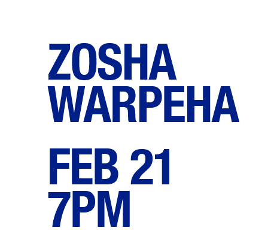

Zosha Warpeha
In dilations, Zosha Warpeha treats body, instrument, and room as a single resonant system. She performs on the hardanger d’amore, a fiddle with additional sympathetic strings that enrich its sound. Here, moving slowly among the audience, she settles into distinct positions for each musical movement, so that changes in proximity and angle affect what each listener hears.
Her new performance for Lampo is fully acoustic, exploring scale, stillness, and suspension, using repetition to reveal how much information lives inside simple, sustained tones.
Zosha Warpeha (b.1994, Milaca, Minn.) is a Brooklyn-based composer-performer working at the intersection of contemporary improvisation and folk traditions. Her long-form compositions explore transformations of time, tonality, and resonant space. She performs primarily on the hardanger d’amore, a sympathetic-stringed instrument closely related to the Norwegian Hardanger fiddle. While her work draws on the cyclical forms and physical momentum of Nordic folk music, her solo practice treats tradition as a material to be reworked rather than preserved.
She has performed at Issue Project Room, Brooklyn; Emanuel Vigeland Museum, Oslo; Frequency Festival, Chicago; Newport Jazz Festival, Newport, R.I.; Vesterheim Museum, Decorah, Iowa; The Stone, New York; Detroit Institute of Arts, Detroit; Greenwood Cemetery Catacombs, Brooklyn; and Duluth-stämman Nordic Music Festival, Duluth, Minn., among others. Collaborators include Bill Frisell, Eyvind Kang, Shahzad Ismaily, Henry Birdsey, Leila Bordreuil, Elori Saxl, Kaïa Kater, Anne Hytta, and Unni Løvlid. Ongoing projects include duos with percussionist Carlo Costa, bassist Tristan Kasten-Krause, and instrument builder Webb Crawford, as well as a string trio with Biliana Voutchkova and Isidora Edwards.
Recordings include silver dawn (Relative Pitch Records, 2024); Orbweaver (Outside Time, 2025), a duo collaboration with Mariel Terán; and I grow accustomed to the dark (Outside Time), to be released in March 2026.
Warpeha has been an artist in residence at Issue Project Room and the Anderson Center, and her work has been supported by the U.S.-Norway Fulbright Foundation, the Jerome Foundation, and the Minnesota Arts and Cultural Heritage Fund. She holds degrees in Nordic folk music and jazz and contemporary music from the Norwegian Academy of Music in Oslo and The New School in New York.
Presented in partnership with the Graham Foundation